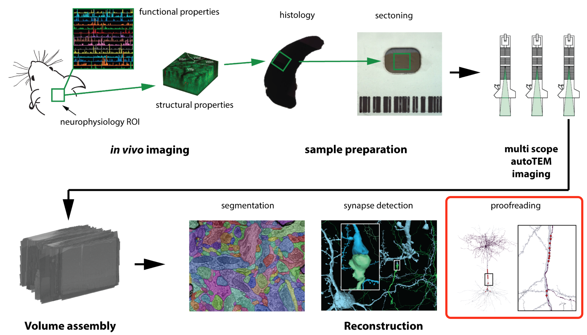
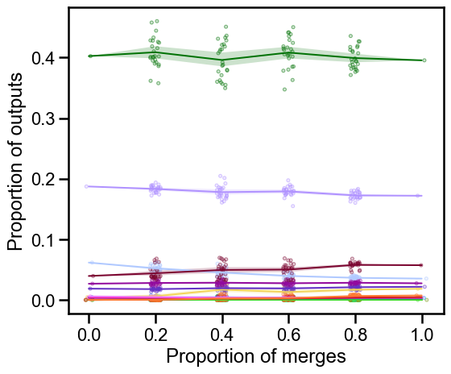

On proofreading and connectome inference#
Ben Pedigo#
(he/him) Scientist I Allen Institute for Brain Science
 ben.pedigo@alleninstute.org
ben.pedigo@alleninstute.org
 @bdpedigo (Github)
@bdpedigo (Github)
 @bpedigod (Twitter)
@bpedigod (Twitter)
 bdpedigo.github.io
bdpedigo.github.io
Background#

Background#


Labor-intensive
Costly
Takes time
Proofreading edits#
We have a record of many edits now, across several datasets
>800K in Minnie, ~2.5 million in V1dd

How much do they matter for downstream conclusions?
Can we predict which edits are most impactful?
Aims#
Aim 1 (paper): develop a quantitative understanding of how proofreading affects connectivity
Characterize which connectivity measures are stable/unstable
Characterize which edits are impactful
Aim 2 (system/paper): develop a system for deploying predictions of impactful edits to prioritize for human or automated proofreading
Aim 1: sensitivity to proofreading#
Understand how connectivity features change with proofreading, e.g.:
Probability cell \(i\) connects to cell \(j\)
Proportion of cell \(i\)’s outputs onto cell type \(k\)
Proportion of cell \(i\)’s outputs onto cell type \(k\) in compartment \(c\)
Why do it?#
Know when we should trust connectivity analyses
How much proofreading to identify a cell’s connectivity type?
How much proofreading to find long-range vs. short-range connections?
Know how much proofreading is needed to answer a question
Approach#

Approach#
Allows us to examine connectivity for various “what if” proofreading scenarios#
Examples: stable neuron#


Examples: unstable neuron#


Differential edit importance#
Distal edits and synapses depend on more proximal merges
Comparing edit dependencies#


Aim 2#
Develop a system for predicting edit impact to prioritize for proofreading
May be specific to the question at hand
Why do it?#
Maximize utility of future proofreading efforts given limited resources
Approach#
Use Aim 1 to quantify impact of edits
Relate morphological features to this impact score
Test by deploying high-priority edits to proofreaders
Questions/comments?#
Appendix#
Prior work on quality-quantity tradeoff#
Would you rather have bit of highly-curated data, or lots of messy data?#

Depends on the question, but there exist theoretical cases where you want the latter
Would you rather have a bit of highly-curated data or lots of ~~messy~~ unproofread, biased data?#
Analogy to “prediction powered inference”#

Analogy from “prediction powered inference”#

Resampling skeletons#
Understand {whether, how} skeleton features are affected by proofreading
Develop classifiers/clustering methods which are robust to such differences
E.g. train classifiers on many “messy” neurons
Example frankeneurons#
Frankeneuron features#

Challenges#
Information already accessible in CAVE, have code for mapping synapses onto their dependant edits
May need some new API features to make it scalable
More specific the question, the smaller our sample size for this kind of approach
Need to assume some kind of homogeneity across the volume for this to work
May not be palatable to the community
Feature set for a model on how proofreading errors affect connectivity?
Results are likely question-specific; unclear to what extent any lessons will generalize
Machine-guided or hypothesis-driven proofreading#
Now that we have these connectome volumes, how should we spend our time?
Algorithm that eats a neuron and predicts completeness
Algorithm that eats a segmentation and predicts sites for edits
Better version: eats a segmentation and a statistic, predicts impactful edits
Find neurons where we need information to assign C-type
Find edits likely to attach many synapses
Approach#
Develop feature set, ideally reusing relevant tested models (PSS, SegCLR, …)
Features could involve anything in power set of {image, segmentation, skeleton, skeleton attributes}
Train {NN, RFC, …} using training set of available edits to predict {edit locations, completeness level, …}
Validate on held out neurons or subvolume
Deployment is a tricker question
V\(0\) Could run predictions on a fixed materialization prior to bout of proofreading
More elaborate version: predict (edit location, importance)
E.g. find me edits likely to add many synapses
Challenges#
Little proof-of-concept for feasibility (as far as I know)
For a random neuron, can we predict where its primary axon might be?
What if you know something about its cell type, say from PSS features?
Ditto for predicting completeness from a cell you know nothing else about
Dynamics: to be useful, would this be running on neurons all the time as they are edited, like the L2cache?
How would a proofreader interact with such a system?
Overlap with other work on auto-proofreading?
Thoughts?#
Paper on how proofreading affects connectivity estimand
Have a specific analysis goal, but message could be a general perspective on how to do analysis in light of noisy proofreading
Side output: defining specific notions of connectivity estimands we care about super clearly
Connection probability: \(P(i \rightarrow j | i,j)\)
What we often plot: how cells distribute outputs over output classes: \(P(i \rightarrow j \in K)\), \(P(i \rightarrow j \in K | d_{ij})\)
Have something that we do expect to fail if there is little proofreading
Maybe worth keeping this simple…
Relationship between segmentation error and neuroanatomy
Example differential edit importance#
Merge dependency graphs for two neurons, size of node = # of dependent synapses